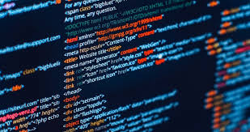
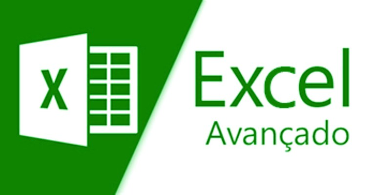
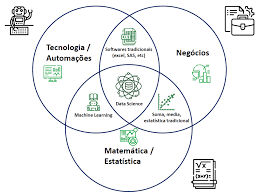
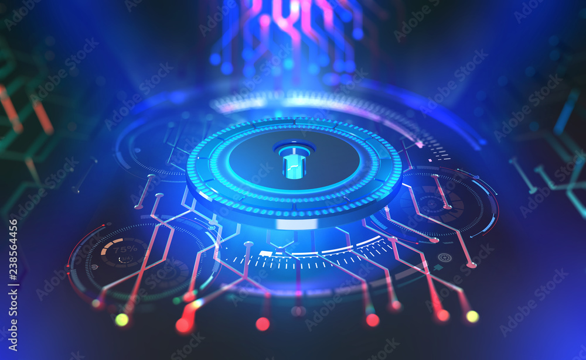

o estudante participa de atividades práticas, desde a montagem de computadores no início do curso, bem como o desenvolvimento de sistemas ao final.
O que se aprende no curso técnico de administração é sobre legislação tributária e trabalhista, administração financeira, empreendedorismo, marketing e outros conteúdos que o permitam ter uma ampla visão empresarial.
O Senac-RS atua hpara atuação no mercado de trabalho. Acompanhou a evolução das tecnologias ao longo do tempo, ofertando cursos atualizados e adequados às demandas das empresas do setor de comércio de bens, serviços e turismo. Ao longo dos últimos 5 anos, mais de 26 mil alunos foram capacitados pelo Senac-RS, na área de Tecnologia da Informação, proporcionando a qualificação do setor.
O profissional responsável pela manutenção de notebook é um dos mais procurados atualmente no setor de prestação de serviços. A praticidade e os baixos preços permitiram a popularização do produto em todos os lugares, onde o número de notebooks,seja para uso profissional ou pessoal,ultrapassa cada vez mais o de desktops. Devido a maior popularização aumenta também a procura por reparos e upgrades, dessa forma profissionais qualificados para a manutenção dos diversos modelos encontrados no mercado sempre encontram oportunidades. O Curso de Técnico em Manutenção de Notebooks trata de noções essenciais para a realização de reparos neste tipo de equipamento.

A gestão de serviços de TI é fundamental para garantir a eficiência e produtividade dos negócios e oferece benefícios como otimização da infraestrutura, melhor controle dos custos, melhoria da qualidade dos serviços e maior satisfação dos usuários. Ou seja, tem se tornado cada vez mais estratégico nesses tempos em que a tecnologia da informação assumiu protagonismo nos processos, na gestão e nos resultados de negócios. O curso tem por objetivo proporcionar ao aluno o entendimento da motivação, objetivos, benefícios e funcionamento de uma estrutura de Gerenciamento de Serviços de TI e das principais metodologias atuais, incluindo fundamentos da biblioteca ITIL. Tal capacitação pretende habilitar o participante a se envolver em iniciativas de definição, construção, implantação, operação e gestão de processos de Gerenciamento de Serviços de TI e dar passos fundamentais para uma atuação mais analítica e propositiva para se tornar um TI estratégico.
Introdução a Programação é o modo como se escreve um programa de computador, um algoritmo. Um algoritmo é uma sequência de passos para se executar uma função. Um exemplo de algoritmo, fora da computação, é uma receita de bolo. E assim como uma receita, tudo precisa ser seguido para o código funcionar.

O Microsoft Excel é o sistema de planilha de cálculos mais utilizado por usuários e empresas. Possui recursos avançados que permitem manipular dados e apresentá-los com interface gráfica amigável, utilizando-se de formulários, macros, permitindo a programação por meio do Visual Basic for Aplications (VBA). O objetivo do curso é preparar o aluno para utilização de recursos avançados da planilha eletrônica Excel e inicialização ao VBA.

Web design é a prática de criar e desenvolver a aparência visual e a estrutura de um site na internet. Envolve a combinação de elementos visuais, como layout, cores, tipografia, imagens e ícones, para criar uma experiência estética e funcional para os usuários que visitam o site.
Neste curso você terá uma introdução abrangente sobre o que é Ciência de Dados, suas principais aplicações, a importância dos dados no mundo atual e porque as carreiras na área de dados estão em alta demanda. Veja abaixo o programa completo do curso, que oferece vasto material complementar, bibliografia, referências e links úteis. Ao fazer este curso você receberá muito mais do que informação. Receberá conhecimento! Para ajudar você que deseja iniciar ou desenvolver sua carreira na área de dados, uma das áreas com maior demanda em todo mundo, o curso traz uma série de guias de carreira com tudo que você precisa saber, desde as atividades de cada função, como iniciar na carreira mesmo sem experiência, até a capacitação necessária.

"Introdução à Segurança Cibernética" é um curso que aborda os conceitos fundamentais relacionados à proteção e defesa das informações e sistemas digitais contra ameaças cibernéticas. Nesse curso, os alunos são introduzidos aos seguintes tópicos: Noções Básicas de Segurança Cibernética: Exploração dos conceitos básicos, importância e desafios da segurança cibernética no mundo digital atual. Ameaças Cibernéticas: Identificação e descrição das principais ameaças cibernéticas, incluindo malware, phishing, ransomware, ataques de negação de serviço (DDoS) e engenharia social. Práticas de Segurança: Introdução às práticas recomendadas para manter a segurança cibernética, como senhas fortes, autenticação em dois fatores, atualizações de software e conscientização do usuário.
"Fundamentos de Redes de Computadores" é um curso que aborda os princípios essenciais das redes de computadores, abrangendo conceitos fundamentais relacionados à comunicação e interconexão de dispositivos. Neste curso, os tópicos abordados incluem: Introdução às Redes de Computadores: Visão geral das redes de computadores, sua importância e como elas permitem a comunicação entre dispositivos. Topologias de Rede: Exploração das diferentes maneiras como dispositivos podem ser interconectados, como estrela, barramento e anel. Protocolos de Comunicação: Introdução aos protocolos de comunicação, como TCP/IP, que regem a troca de informações entre dispositivos em uma rede. Endereçamento IP: Explicação dos endereços IP e sua importância na identificação única de dispositivos em uma rede.